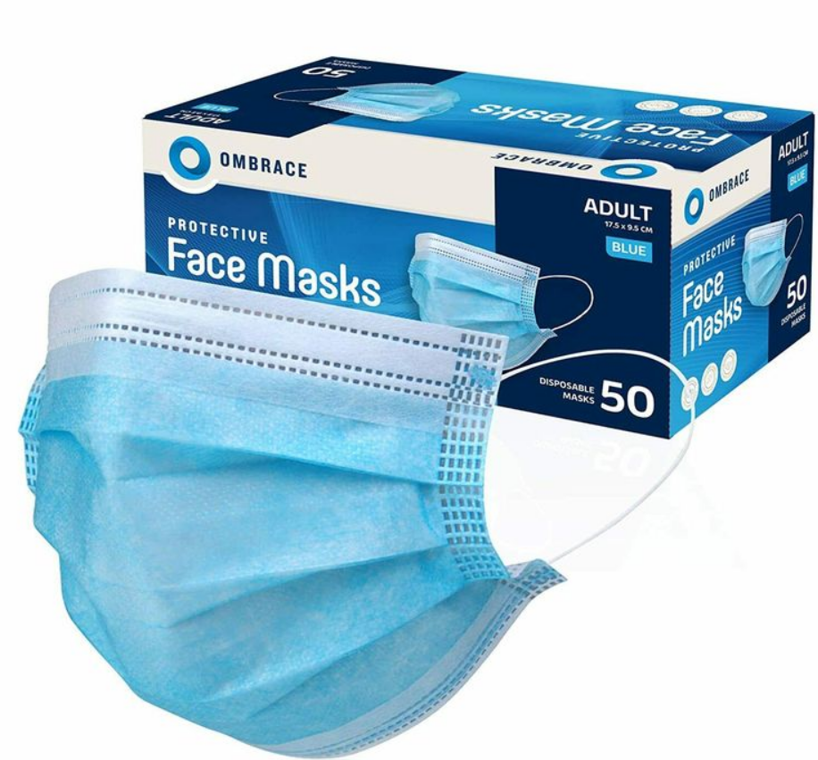
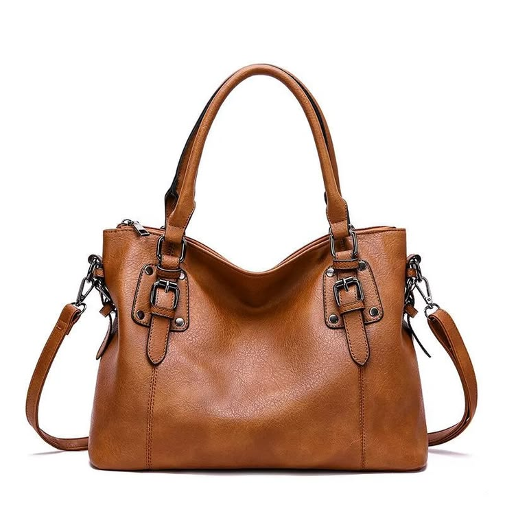
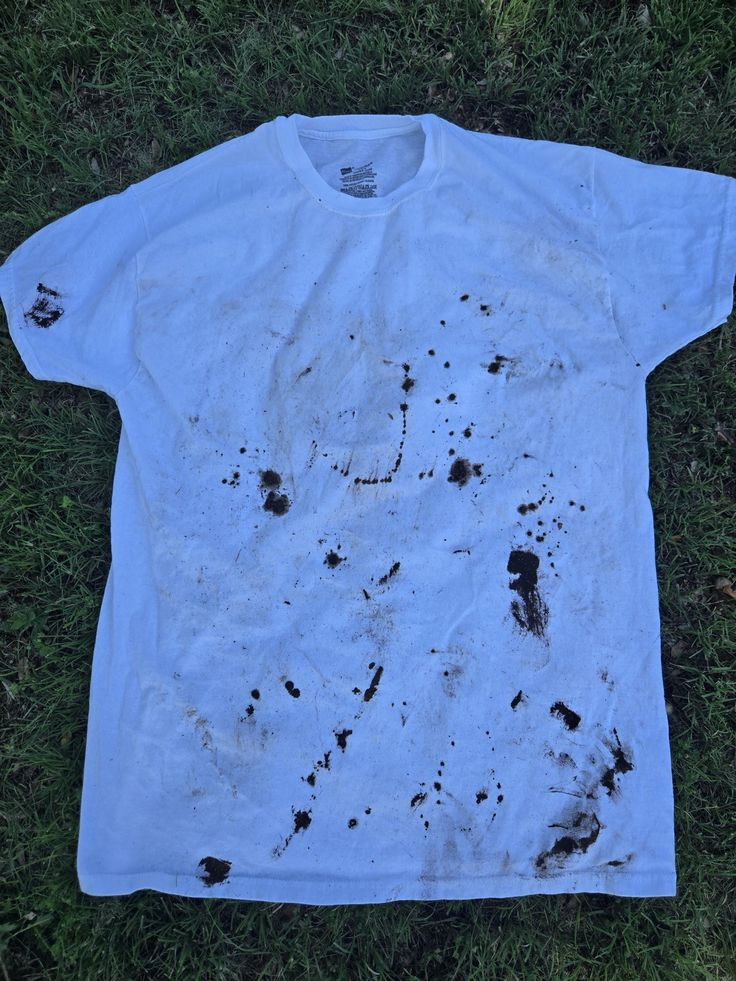
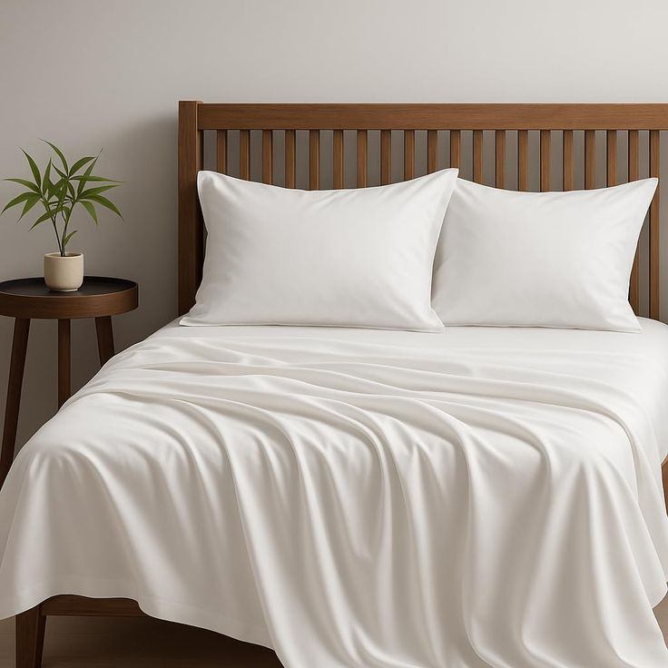

Bedrooms and children's rooms are areas where you want to clean with as few chemically synthesized products as possible.
e-WASH is 99.83% pure water, so it can be used safely even in rooms with babies. It will help maintain a comfortable environment.
Spray e-WASH evenly on both sides, then wipe with a dry cloth. It will also remove fingerprints effectively.
Pour enough e-WASH into the container holding the masks so that they are completely submerged.
After gently hand-washing, rinse under running water and air dry in the shade.


Spray e-WASH evenly over the surface and wipe it off with a dry cloth.
For detailed areas, spray e-WASH onto a cloth before wiping for a smoother finish.
For accessories with intricate decorations, soak them in e-WASH for about a minute. Shaking them gently will help remove dirt.
Rinse under running water and pat dry with a clean towel.
Mouthguards, dentures, and partial dentures that are placed directly in the mouth can be cleaned using the same method.

For localized stains, spray a generous amount of e-WASH directly onto the stain. While doing so, place a paper towel or similar material on the back of the fabric and press down to remove the stain.
Wipe the soiled area with a clean, dry towel to absorb the dirt. If the dirt is stubborn, lightly scrub it with a sponge before using a towel.
Spray e-WASH from a short distance away, creating a mist-like spray into the air.
Hang the comforter out to dry, then spray it with e-WASH from a short distance away.
Just like with bedding, spray it into the air from a short distance away.
